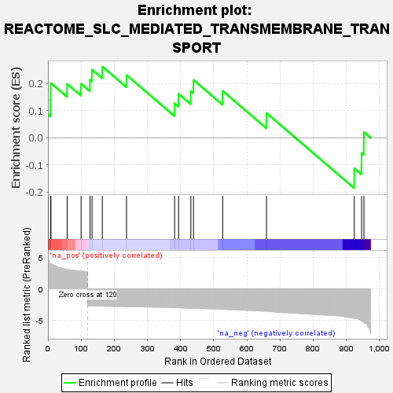
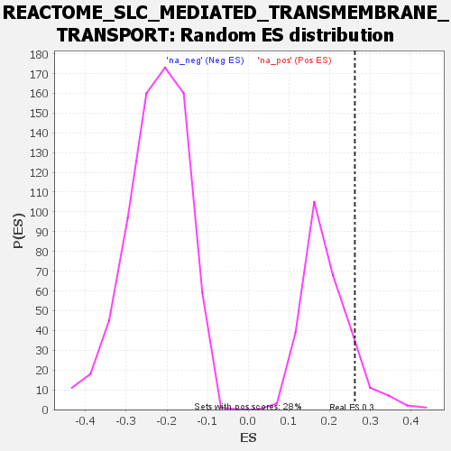

| | | Dataset | genes_ranked_stat_0.1 |
| Phenotype | NoPhenotypeAvailable |
| Upregulated in class | na_pos |
| GeneSet | REACTOME_SLC_MEDIATED_TRANSMEMBRANE_TRANSPORT |
| Enrichment Score (ES) | 0.261955 |
| Normalized Enrichment Score (NES) | 1.3671104 |
| Nominal p-value | 0.11956522 |
| FDR q-value | 0.5138671 |
| FWER p-Value | 0.514 |
Table: GSEA Results Summary

Fig 1: Enrichment plot: REACTOME_SLC_MEDIATED_TRANSMEMBRANE_TRANSPORT
Profile of the Running ES Score & Positions of GeneSet Members on the Rank Ordered List

Fig 2: REACTOME_SLC_MEDIATED_TRANSMEMBRANE_TRANSPORT: Random ES distribution
Gene set null distribution of ES for REACTOME_SLC_MEDIATED_TRANSMEMBRANE_TRANSPORT